名誉顧問
桑田正博Masahiro Kuwata
歯科技工士。ボストン大学客員教授。
PFMクラウン（金属焼付ポーセレン：通称メタルボンド）の共同開発者。アメリカで100年以上続く Academy of Prosthodontics（アメリカ歯科補綴学会）の名誉会員。世界中に5,000人を超える教え子を持つ。
K2の名誉顧問を務めた。
PEOPLE
K2の名誉顧問・主宰と、ハンズオンコース・例会の講師陣です。
名誉顧問
歯科技工士。ボストン大学客員教授。
PFMクラウン（金属焼付ポーセレン：通称メタルボンド）の共同開発者。アメリカで100年以上続く Academy of Prosthodontics（アメリカ歯科補綴学会）の名誉会員。世界中に5,000人を超える教え子を持つ。
K2の名誉顧問を務めた。

主宰／ハンズオンコース ディレクター
東京都出身。1989年 日本大学松戸歯学部卒業。1992年 北原歯科医院開院、2000年 ルウミネッセンス開院、2003年 銀座ノブデンタルオフィス開院。2007年 シンガポールライセンス取得（TP Dental Surgeon 非常勤）。2012年 東京八重洲に TEAM東京 ノブレストラティブデンタルオフィス開院。2014年 シンガポール Asia Healthcare Dental Center 非常勤。
日本大学客員教授（松戸歯学部）、昭和大学歯学部客員教授、日本大学歯学部兼任講師、日本臨床歯科医学会（SJCD）東京支部理事、SJCDレギュラーコースインストラクター。
American Academy of Esthetic Dentistry（AAED）会員。日本歯周病学会、日本歯科保存学会、日本接着歯学会、日本歯科理工学会、日本審美歯科学会、日本顎咬合学会 所属。
LECTURERS
桑田正博先生の咬合理論と修復治療のテクニックを継承し、実践する臨床家たちです。
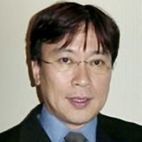
茂野啓示 先生
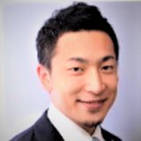
園田晋平 先生
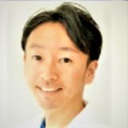
遠山敏成 先生
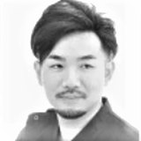
清水良介 先生
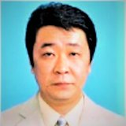
上林健 先生
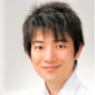
高島浩二 先生
杉山達也 先生
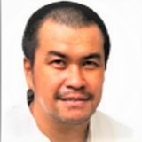
菅義嗣 先生
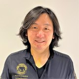
宮澤広人 先生
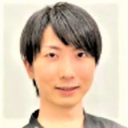
篠原宏晨 先生
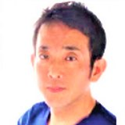
橋爪英城 先生
土屋和子 先生
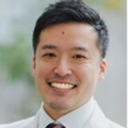
葭澤秀一郎 先生